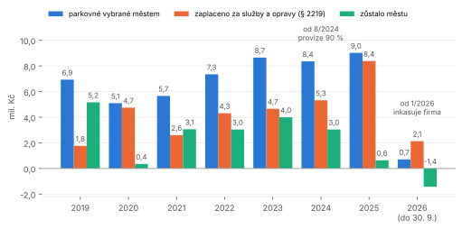
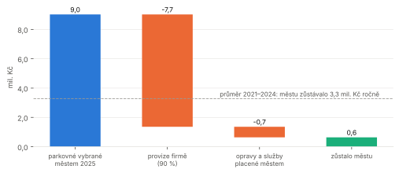
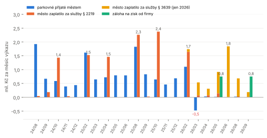
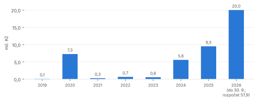
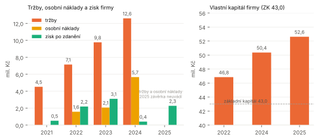
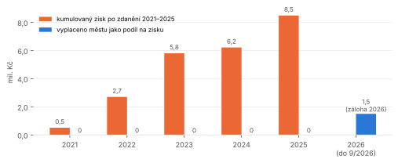
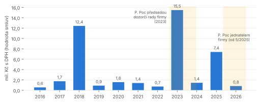
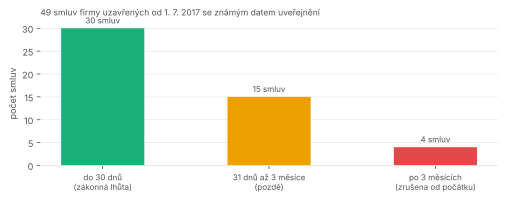

Naše Mariánky v přehledech · auditní zpráva z veřejných zdrojů · stav dat k 27. 10. 2026
DEVELOP CENTRUM Mariánské Lázně s.r.o. Kam tečou peníze z parkování
Městská firma (dříve PARKING CENTRUM), její propojení, hospodaření, smlouvy s městem, potenciální ztráty pro městský rozpočet a seznam možných právních pochybení k ověření.
Čtěte s tímto Zpráva vznikla výhradně z veřejných zdrojů: obchodní rejstřík a sbírka listin (přes konektor Sagasu), registr smluv a Hlídač státu, usnesení rady a zastupitelstva, výkazy města v Monitoru státní pokladny. Není to audit podle zákona o auditorech a nikdo z města ani z firmy nebyl dotázán. U každého tvrzení je proto odděleno, co je doložený fakt, co je odhad a co je otázka. Nic z toho není výrok, že se někdo obohatil nebo porušil zákon; „možné pochybení" znamená, že veřejná data odpovídají stavu, který zákon zakazuje nebo podmiňuje, a chybí doklad, že podmínka byla splněna.
9,0 mil. Kčparkovné vybrané městem v roce 2025 (Monitor, § 2219 pol. 2111)
10,7 mil. Kčprovize 90 % vyplacená firmě za 17 měsíců správy (8/2024–12/2025)
0,6 mil. Kčzůstalo městu z parkování v roce 2025; v letech 2021–2024 to bylo 3,0–4,0 mil. ročně
0 Kčpodíl na zisku vyplacený městu za roky 2021–2025; zisk 8,5 mil. Kč zůstal ve firmě
52,6 mil. Kčvlastní kapitál firmy k 31. 12. 2025 (základní kapitál 43,0 mil.)
5,7 mil. Kčosobní náklady firmy 2024, proti 2,1 mil. v roce 2023; zisk 2024 klesl na 0,4 mil.
3 rokyzpráv o vztazích (2023–2025) schválených radou, ale nezaložených ve sbírce listin
44,5 mil. Kčsmluv města s firmou Zahradní a parková, kterou spoluvlastní a řídí jednatel DEVELOP CENTRA
Obsah
Shrnutí
Rozsah, metoda a limity
Kdo je s kým propojen (organigram)
Jak se přepisovaly peníze: časová osa a tři schémata toků
Co parkování přineslo městu: rok po roce, měsíc po měsíci
Hospodaření firmy podle účetních závěrek
Kam peníze odtékají: rekonciliace a potenciální ztráty města
Jednatel firmy a dodavatel města Zahradní a parková
Smlouvy firmy v registru: lhůty, zpětné účinnosti, chybějící ceny
Seznam možných právních pochybení k ověření
Otázky podle zákona č. 106/1999 Sb. a komu je poslat
Zdroje
1. Shrnutí
Město přišlo o čistý příjem z parkování. V letech 2021–2024 mu po odečtení služeb a oprav zůstávalo 3,0–4,0 mil. Kč ročně. Od srpna 2024 platí firmě 90 % parkovného jako odměnu za správu (10,7 mil. Kč za 17 měsíců), v roce 2025 mu zůstalo 0,6 mil. Kč a od roku 2026 vybírá parkovné firma sama. Zpět přišla jen „záloha na zisk" 1,5 mil. Kč.
Peníze z firmy neodcházejí, ale ani se nevracejí. Za roky 2021–2025 firma vydělala po zdanění 8,5 mil. Kč a městu nevyplatila nic; vlastní kapitál vzrostl na 52,6 mil. Kč. Přitom v roce 2024 osobní náklady firmy skočily z 2,1 na 5,7 mil. Kč a zisk klesl na 0,4 mil. Kč. Rada v červnu 2026 uložila připravit snížení základního kapitálu 43 mil. Kč.
V roce 2026 vznikl kruh: paušál ven, záloha dovnitř. Jedním usnesením rada schválila firmě paušál 250 000 Kč měsíčně a od firmy zálohu na zisk 250 000 Kč měsíčně. Z každého oběhu ujde DPH a daň z příjmů státu (odhadem 0,3–0,7 mil. Kč za pololetí). Paušál byl zpětně ukončen k 30. 6. 2026 a nahrazen bezúplatnou výpůjčkou 34 parkovacích ploch a tří lázeňských pavilonů na šest let.
Smlouvy se uzavírají se zpětnou účinností (čtyři případy), což zákon o registru smluv vylučuje, a firma sama zveřejňuje smlouvy pozdě (19 ze 49 po lhůtě, z toho 4 po třech měsících, tedy ze zákona zrušené).
Ve sbírce listin chybí zprávy o vztazích 2023–2025 a zpráva auditora 2025, přestože rada je schválila a uložila jednateli jejich založení. Právě tyto dokumenty popisují vztahy, o které tu jde.
Jednatel firmy Pavel Poc je zároveň společník a jednatel Zahradní a parková spol. s r.o., která městu dodala práce za 44,5 mil. Kč (15,5 mil. v roce 2023, kdy předsedal dozorčí radě firmy). Oznámení střetu zájmů podle § 54 ZOK není ve veřejných usneseních.
Dozorčí radu firmy tvoří dva radní (Chadim, Král), kteří zároveň jako členové rady města schvalují smlouvy s firmou i její závěrky. Starosta byl členem dozorčí rady do 5/2025.
Kolik stojí správa parkování ve skutečnosti, nikdo veřejně nespočítal. Kalkulace odměny, výkaz činnosti k paušálu, mezitímní závěrka k záloze na zisk, posouzení in-house zadání i zdůvodnění bezúplatné výpůjčky jsou přílohy usnesení, které město nezveřejňuje. To je obsah žádostí v kapitole 11.
2. Rozsah, metoda a limity
zdroj
co z něj je
limit
Obchodní rejstřík, sbírka listin (or.justice.cz přes Sagasu)
orgány, kapitál, změny formy, účetní závěrky 2021–2025, zpráva o vztazích 2022, notářský zápis 2025
závěrky 2023–2025 jsou podané přes finanční úřad bez výroční zprávy; zprávy o vztazích 2023–2025 chybí
Registr smluv, Hlídač státu
51 smluv firmy, texty příkazních smluv, dohody o narovnání, výpůjčky; data uzavření a prvního uveřejnění
platby a faktury registr nevede; 8 smluv je bez ceny
Usnesení rady a zastupitelstva (usneseni.muml.cz)
283 usnesení o firmě 2012–2026, text rozhodnutí
přílohy (smlouvy, kalkulace, analýzy) město nezveřejňuje
Monitor státní pokladny, FIN 2-12 M
příjmy a výdaje města po paragrafech a položkách, ročně 2010–2025 a měsíčně 2024–2026
bez protistrany; leden a červenec se nezveřejňují; město na paragrafu platí i jiné dodavatele
Částky z výkazů města jsou v Kč včetně DPH, částky z registru smluv s DPH, pokud není uvedeno jinak; čísla z účetních závěrek firmy jsou v tis. Kč. „Zůstalo městu" = parkovné (pol. 2111) minus nákup služeb (5169) minus opravy a udržování (5171) na paragrafu 2219; investice (6121) se počítají zvlášť, protože jde o majetek města. Měsíční toky jsou rozdíly kumulované skutečnosti mezi dvěma výkazy.
3. Kdo je s kým propojen
Město firmu vlastní na 100 % a rada města je její valnou hromadou. Tím se v jedněch rukou potkává role objednatele (rada schvaluje smlouvy města s firmou), vlastníka (rada schvaluje závěrky, jmenuje orgány, rozhoduje o zisku) a dozoru (dva radní sedí v dozorčí radě). Jednatel Pavel Poc k tomu přidává vlastní firmu, která je dodavatelem města.
Organigram propojení. Zdroje: obchodní rejstřík (Sagasu obchodni_rejstrik, verejny_rejstrik_osoba), usnesení RM 83/39 (1. 4. 2025) a 88/3 (13. 5. 2025), Hlídač státu (smlouvy Zahradní a parková, SUAS Commodities).
osoba
ve firmě
ve městě
jinde
Karel Henych
jednatel od 2023
—
—
RNDr. Pavel Poc (1964)
předseda dozorčí rady 2023 (odvolán 19. 12. 2023), jednatel od 13. 5. 2025
—
společník a jednatel Zahradní a parková spol. s r.o.; orgány Sokolovská uhelná, SUAS GROUP, SUAS Management, SUAS Ecology, CHEVAK Cheb, Industrial Park Sokolov, MAS 21
JUDr. Miloslav Chadim
dozorčí rada od 1. 4. 2025
radní (ANO)
—
Zdeněk Král
dozorčí rada od 1. 4. 2025
uvolněný radní (ODS); předkládal změnu právní formy 2023
—
Mgr. Ladislav Špelina
dozorčí rada od 5/2025
—
—
Martin Hurajčík
dozorčí rada do 31. 5. 2025
starosta; podepisuje smlouvy města s firmou
—
Otázka Zda radní v dozorčí radě hlasují v radě o smlouvách s firmou a o její závěrce, nebo se zdržují (§ 83 odst. 2 zákona o obcích ukládá oznámit střet zájmů před projednáním). Z usnesení to není vidět, zápisy z rady neobsahují jmenovité hlasování.
Fáze 1 (8/2024–12/2025): parkovné městu, 90 % firmě
Příkazní smlouva o správě parkovacího systému z 31. 7. 2024 (registr 29673568): odměna 90 % všech příjmů z parkovacího systému, výslovně i na „další činnosti a rozvoj společnosti". Provize se platila čtvrtletně (kap. 5).
Fáze 2 (1–6/2026): parkovné firmě, paušál ven a záloha dovnitř
Dohoda o narovnání a Příkazní smlouva ROZVOJ z 23. 1. 2026 (registr 36736349, RM 109/25), rozhodnutí jediného společníka o záloze na zisk z téhož dne, změny RM 114/33 (30. 3. 2026) a 123/13 (4. 8. 2026).
Fáze 3 (od 7/2026): výpůjčka zdarma na šest let
Smlouva o výpůjčce a správě svěřeného majetku z 10. 8. 2026 (registr 39325283, RM 123/12), účinnost 1. 7. 2026, dodatek č. 1 z 1. 10. 2026 (RM 131/25); rozpočtové opatření RM 130/2 (15. 9. 2026).
5. Co parkování přineslo městu

Město, § 2219 (ostatní záležitosti pozemních komunikací): parkovné (pol. 2111), nákup služeb a opravy (5169 + 5171) a rozdíl. Rok 2026 do 30. 9. Zdroj: Monitor státní pokladny, data/rozpocet/parkovani_mesicne.json.
rok
parkovné
služby (5169)
opravy (5171)
zůstalo městu
investice (6121)
poznámka
2019
6,93
0,43
1,33
5,16
0,12
2020
5,09
0,30
4,44
0,35
7,29
covid, velké opravy
2021
5,66
0,25
2,36
3,06
0,29
2022
7,35
0,44
3,86
3,04
0,67
2023
8,65
0,48
4,17
3,99
0,57
2024
8,36
1,98
3,34
3,04
5,61
provize od srpna
2025
9,02
7,66
0,72
0,63
9,53
provize celý rok; + 0,38 mil. z prodeje automatů
2026 (do 30. 9.)
0,70
1,99
0,14
−1,43
20,03
+ 1,50 záloha na zisk (§ 3639); parkovné inkasuje firma
Fakt Opravy klesly v roce 2025 na 0,72 mil. Kč, protože údržbu automatů od té doby nese firma; to je část toho, co provize 90 % platí. I po tomto započtení zůstalo městu z parkování v roce 2025 šestkrát méně než v průměru let 2021–2024.

Rok 2025: z 9,02 mil. Kč parkovného šlo 7,66 mil. Kč firmě a 0,72 mil. Kč na opravy a jiné služby; městu zůstalo 0,63 mil. Kč.
Měsíc po měsíci: kdy město platilo a kdy dostávalo

Měsíční přírůstky kumulované skutečnosti. Služby na § 3639 (komunální služby a územní rozvoj) jsou stažené jen pro rok 2026, kde se podle všeho účtuje paušál ROZVOJ. Zdroj: Monitor, měsíční FIN 2-12 M.
Provize se platila čtvrtletně, vždy v měsíci po konci čtvrtletí: 10/2024 1,43 mil., 2/2025 1,53 mil., 4/2025 1,46 mil., 8/2025 2,26 mil., 10/2025 2,37 mil., 2/2026 1,65 mil. Součet 10,7 mil. Kč odpovídá 90 % z parkovného za srpen 2024 až prosinec 2025 (11,9 mil. × 0,9).
Předání inkasa firmě je vidět v březnu 2026: parkovné města kleslo o 0,48 mil. Kč, tedy město vrátilo část lednového a únorového výběru. Od dubna 2026 inkasuje město z parkování desítky tisíc měsíčně.
Paušál ROZVOJ (6 × 302 500 Kč s DPH = 1,815 mil.) na paragrafu parkování není. Na § 3639 je v červnu 2026 skok 1,83 mil. Kč, měsíc po tom, co rada 12. 5. 2026 „schválila vyplacení odměny". Paragraf nese i jiné služby města, přiřazení firmě je pravděpodobné, ne doložené.
Záloha na zisk přišla ve dvou splátkách po 750 000 Kč, v květnu a září 2026 (pol. 3639/2142, kterou rozpočtové opatření z 15. 9. 2026 pojmenovává „záloha na zisk – DEVELOP CENTRUM").

Investiční výdaje města na § 2219 (pol. 6121). Rozpočet 2026 je 57,9 mil. Kč; co z toho jsou parkovací plochy půjčené firmě zdarma, z výkazu nejde poznat.
Otázka Které investice na § 2219 v letech 2024–2026 směřují do parkovacích ploch, které město firmě od 1. 7. 2026 půjčuje bezúplatně? Investuje město a výnos má firma?
6. Hospodaření firmy podle účetních závěrek

Účetní závěrky ve sbírce listin (XML části přečtené přes Sagasu listina_text; 2025 z PDF). Výkaz zisku a ztráty 2025 v této podobě neuvádí členění tržeb a osobních nákladů.
tis. Kč
2021
2022
2023
2024
2025
tržby
4 522
7 145
9 762
12 593
·
osobní náklady
·
1 578
2 067
5 663
·
z toho mzdy
·
·
1 534
4 152
·
zisk po zdanění
512
2 193
3 101
412
2 273
vlastní kapitál
·
46 845
·
50 357
52 612
aktiva celkem / peníze
·
·
·
·
63 057 / 8 284
průměrný počet zaměstnanců
·
1,65
·
·
·
podíl na zisku vyplacený městu
0
0
0
0
0

Zisk se každý rok převáděl na nerozdělený zisk (RM 25/39 2023, 53/5 2024, 88/2 2025, 119/2 2026). První peníze městu jsou zálohy na zisk 2026.
Fakt Tržby firmy vzrostly 2021–2024 téměř trojnásobně, převážně díky provizi 90 % (od 8/2024). V roce 2024 osobní náklady vzrostly o 3,6 mil. Kč (2,7×), takže zisk klesl na 0,4 mil. Kč, i když tržby stouply o 2,8 mil. Kč. V roce 2022 měla firma 1,65 zaměstnance; mzdy 4,15 mil. Kč v roce 2024 by při pěti zaměstnancích znamenaly asi 69 tis. Kč hrubého měsíčně na osobu, počet zaměstnanců 2024 ale závěrka v této podobě neuvádí.
Otázka Počet zaměstnanců a mzdová struktura 2024–2026, odměny jednatelů a členů dozorčí rady (rada 12. 5. a 21. 7. 2026 „schvaluje vyplacení odměny za provedenou činnost" bez částky), účel snížení základního kapitálu 43 mil. Kč (RM 119/2) a komu se uvolněné prostředky vyplatí.
7. Kam peníze odtékají: rekonciliace a potenciální ztráty města
Co město firmě zaplatilo a co od ní dostalo (8/2024–9/2026)
registr 36736349; v Monitoru pravděpodobně § 3639/5169, červen 2026
město → firma
marketing „Evropské město sportu 2025" (objednávky 2024–2025)
0,8
registr: 170,5 + 155,3 + 4 × 120,0 tis.
město → firma
„narovnání sporných nároků" (užívání prostor městskou policií)
0,6
ZM 17/28, registr 31129212
město → firma
nájem kanceláří pro městskou policii, od 7/2025 39 680 Kč měsíčně
~0,6 / rok
registr 34466361
město → firma
„mimořádné náklady" k příkazní smlouvě bydlení (studie, průzkumy)
0,2
RM 99/24, 104/22, 107/4
město → firma
pojištění vypůjčeného majetku od 7/2026; parkovné od 1/2026 inkasuje firma (odhad 9 mil. ročně)
?
registr 39325283; Monitor pol. 2111
firma → město
splátky kupní ceny pozemků pod parkovacím domem (9,76 mil. v 10 splátkách)
~0,8 / rok
registr 25530603
firma → město
kupní cena 21 automatů (zůstatková hodnota)
0,46
RM 85/24, Monitor pol. 3113 (2025)
firma → město
kupní cena pozemku p. p. č. 1/12
0,6
registr 32065240
firma → město
záloha na zisk 2026
1,5
Monitor § 3639/2142, 5/2026 a 9/2026
firma → město
podíl na zisku 2021–2025
0
usnesení valné hromady (zisk vždy na nerozdělený zisk)
Kde peníze z parkování končí
V osobních nákladech firmy: 5,7 mil. Kč v roce 2024 proti 2,1 mil. v roce 2023. Provize přišla a náklady na lidi se téměř ztrojnásobily. Komu a za co, závěrka neříká.
V nerozděleném zisku a majetku firmy: kumulovaný zisk 2021–2025 8,5 mil. Kč, vlastní kapitál 52,6 mil. Kč; firma kupuje automaty (10 ks za 2,07 mil., dalších až 5 mil. schváleno, 3 ks za 0,6 mil.), studie a stojany. Peníze města jsou vázané ve firmě, město je může dostat jen rozhodnutím o podílu na zisku, které sama rada šest let nepřijala.
Ve státní pokladně: každá koruna, kterou město firmě zaplatí jako odměnu, nese 21 % DPH, kterou si město u této činnosti zpravidla neodečte, a než se vrátí jako podíl na zisku, projde 21 % daní z příjmů právnických osob. Kruh „paušál ↔ záloha" z roku 2026 tak z 1,5 mil. Kč nechá státu odhadem 0,3–0,7 mil. Kč.
V projektech, které nemají cenu: příkazní smlouvy bydlení a Nové Centrum jsou v registru bez hodnoty (odměna „součástí odměny za parkování", „dle kalkulací"), paušál ROZVOJ nemá veřejný výkaz činnosti. Rada za pololetí 2026 schválila výplatu odměny dvakrát bez částky.
V majetku půjčeném zdarma: od 1. 7. 2026 firma užívá 34 parkovacích ploch a tři lázeňské pavilony bez nájmu, smí je komerčně využívat, podnajímat a nechat si výnosy; město platí pojištění a investuje do komunikací 20 mil. Kč za devět měsíců.
Potenciální ztráty města (odhady)
Odhad Čísla níže jsou odhady z veřejných dat, ne zjištěné škody. Část „ztráty" města je zisk firmy, kterou město vlastní; ztrátou se stává tím, že peníze nejsou v rozpočtu, že se o ně dělí se státem a že o jejich použití nerozhoduje zastupitelstvo.
položka
odhad
základ výpočtu
jistota
ušlý čistý příjem z parkování
2,5–3,4 mil. Kč ročně
průměr „zůstalo městu" 2021–2024 je 3,3 mil.; 2025: 0,6 mil.; 2026 včetně zálohy ~0
vysoká pro 2025 (výkaz), střední pro 2026
daňový únik kruhu paušál ↔ záloha
0,3–0,7 mil. Kč za pololetí
DPH 21 % z 1,5 mil. = 0,32 mil.; krytí 1,5 mil. zálohy ze zisku po 21 % dani vyžaduje 1,9 mil. před zdaněním
nízká, závisí na odpočtu DPH a daňovém základu firmy
bezúplatná výpůjčka 34 ploch a 3 pavilonů
nelze vyčíslit; obrat majetku přes 9 mil. ročně
obvyklé nájemné není známo; firma sama pronajímá stání hotelům za 0,54 mil. ročně na jednu smlouvu
otázka pro znalecký posudek
plnění před účinností smlouvy ROZVOJ
~0,33 mil. Kč bez DPH
1. 1.–10. 2. 2026 při 250 000 Kč měsíčně; bez právního důvodu (§ 6 odst. 1 ZRS)
vysoká co do faktu
osobní náklady firmy nad úroveň 2023
3,6 mil. Kč (2024)
5 663 − 2 067 tis. Kč
vysoká (závěrka); zda jde o ztrátu, závisí na tom, co lidé dělají
zisk zadržený ve firmě
8,5 mil. Kč (2021–2025)
součet zisku po zdanění, 0 vyplaceno
vysoká
pozemky pod parkovacím domem ve splátkách
0,2–0,4 mil. Kč ročně
9,76 mil. v 10 splátkách; při 2–4 % úroku, pokud je bezúročně
otázka (úročení není známo)
prodej 21 automatů za zůstatkovou hodnotu
?
0,46 mil. Kč; nové automaty firma kupuje za 0,2 mil. Kč za kus
otázka (tržní cena)
investice města do ploch užívaných firmou
až 20 mil. Kč (2026)
§ 2219/6121 za 9 měsíců; podíl parkovacích ploch neznámý
otázka
8. Jednatel firmy a dodavatel města Zahradní a parková

Hodnota smluv města se Zahradní a parková spol. s r.o. (IČO 25205978) podle registru smluv, 85 smluv, 44,5 mil. Kč. Zdroj: Hlídač státu, data/penize/smlouvy/.
Fakt Pavel Poc je podle veřejného rejstříku společník a jednatel Zahradní a parková spol. s r.o. V roce 2023, kdy předsedal dozorčí radě PARKING CENTRA, uzavřelo město se Zahradní a parková smlouvy za 15,5 mil. Kč, nejvíc za sledované období; v roce 2025, kdy se stal jednatelem, za 7,4 mil. Kč. Smlouva „letničky 2021" za 506 tis. Kč byla uveřejněna až po třech měsících.
Otázka Oznámil jednatel střet zájmů valné hromadě (§ 54 ZOK) a rozhodla rada o případném pozastavení výkonu funkce (§ 54 odst. 4)? Administruje DEVELOP CENTRUM pro město zakázky, o které se Zahradní a parková uchází (Třešňovka, U Pily, Hamrníky, veřejná zeleň)? Rok 2023 a rok 2025 jsou výkyvy, ne důkaz souvislosti; souvislost by potvrdil nebo vyvrátil jen seznam zakázek a jejich zadavatelů.
9. Smlouvy firmy v registru

Smlouvy firmy uzavřené od 1. 7. 2017 podle doby do prvního uveřejnění (zákonná lhůta 30 dnů, zrušení od počátku po 3 měsících). Zdroj: data/penize/lhuty_zverejneni.json.
uzavřeno
uveřejněno
dnů
smlouva
Kč s DPH
následek podle zákona
1. 1. 2024
14. 6. 2024
165
užívání parkovacích stání, Dopravní podnik Karlovy Vary (znovu uzavřeno 15. 8. 2024)
363 000
zrušena od počátku (§ 7 odst. 1)
31. 7. 2025
15. 12. 2025
137
příkazní smlouva, účetní poradenství
72 600
zrušena od počátku
23. 6. 2026
23. 10. 2026
122
objednávka zastavovací studie Bydlení u Pily
118 580
zrušena od počátku
1. 7. 2026
23. 10. 2026
114
objednávka studie proveditelnosti
266 200
zrušena od počátku
14. 11. 2025
13. 2. 2026
91
stavební práce na parkovacím domě
825 861
o den uvnitř tříměsíční lhůty; neúčinná 91 dní
23. 1. 2026
10. 2. 2026
18
Dohoda o narovnání + příkazní ROZVOJ, účinnost sjednána k 1. 1. 2026
3 630 000
účinnost nejdřív 10. 2. (§ 6 odst. 1); plnění za leden bez smlouvy
16. 12. 2024
16. 12. 2024
0
příkazní smlouva bydlení, účinnost 29. 10. 2024
bez ceny
zpětná účinnost
19. 8. 2026
3. 9. 2026
15
dohoda o ukončení ROZVOJ s účinky k 30. 6. 2026
bez ceny
zpětná účinnost
10. 8. 2026
31. 8. 2026
21
výpůjčka a správa svěřeného majetku, účinnost 1. 7. 2026
bez ceny
zpětná účinnost
Bez ceny jsou dále: příkazní Nové Centrum, Dodatek č. 1 ROZVOJ, nájem pozemků pro automaty, EasyPark, jedna smlouva o stání. Dvě objednávky z června a července 2026 firma uveřejnila najednou 23. 10. 2026. Firma přitom sama po hotelu HOTELIS s.r.o. vymáhá 600 000 Kč bez DPH jako bezdůvodné obohacení za parkování bez smlouvy (registr 36459385): stejný princip dopadá na plnění ze smluv se zpětnou účinností.
10. Seznam možných právních pochybení k ověření
Závažnost: A dopad na platnost smlouvy nebo na veřejné prostředky, B porušení povinnosti bez přímého majetkového dopadu, C procesní. „Co by to vyvrátilo" je dokument, který město nebo firma mají mít a který lze žádat podle zákona č. 106/1999 Sb.
čtyři smlouvy s městem sjednávají účinnost před uveřejněním (ROZVOJ 1. 1. vs. 10. 2. 2026; bydlení 29. 10. vs. 16. 12. 2024; ukončení ROZVOJ 30. 6. vs. 3. 9. 2026; výpůjčka 1. 7. vs. 31. 8. 2026)
dohoda o vypořádání plnění před účinností; doklad, že se plnilo až od uveřejnění
A
2
Registr smluv, § 7 odst. 1: zrušení od počátku po 3 měsících
4 smlouvy firmy uveřejněny po více než 3 měsících (363 000, 72 600, 118 580, 266 200 Kč)
doklad, že se neplnilo, nebo nová smlouva a vypořádání bezdůvodného obohacení
A
3
Registr smluv, § 5 odst. 2: 30 dnů
19 ze 49 smluv firmy (od 7/2017) uveřejněno po lhůtě
— (pořádková lhůta bez sankce; ukazuje na vnitřní proces)
C
4
ZOK § 40 odst. 2: záloha na podíl na zisku jen na základě mezitímní účetní závěrky
rozhodnutí o záloze 3 mil. Kč z 20. 1. 2026 závěrku nezmiňuje; změny 30. 3. a 4. 8. 2026 rovněž
mezitímní účetní závěrka k 31. 12. 2025 nebo k lednu 2026 s testem § 40 odst. 1
A
5
ZOK § 82 a § 84, zákon o účetnictví § 21a, zák. 304/2013 Sb. § 104: založení zprávy o vztazích, výroční zprávy a zprávy auditora
ve sbírce listin chybí zprávy o vztazích 2023–2025 a zpráva auditora 2025, které rada schválila (RM 53/5, 88/2, 119/2)
doklad o podání rejstříkovému soudu
B
6
ZOK § 54–55: oznámení střetu zájmů jednatele
jednatel P. Poc je společník a jednatel dodavatele města (44,5 mil. Kč); v usneseních rady oznámení není
zápis z valné hromady (rady) s oznámením a rozhodnutím podle § 54 odst. 4
B
7
Zákon o obcích § 83 odst. 2: oznámení střetu zájmů člena zastupitelstva před projednáním
dva radní v dozorčí radě hlasují v radě o smlouvách s firmou a o její závěrce
zápisy z jednání rady s oznámením a záznamem o hlasování
C
8
ZZVZ § 2 a § 11: zakázka bez zadávacího řízení jen při splnění podmínek vertikální spolupráce (ovládání, více než 80 % činnosti pro zadavatele)
příkazní smlouvy (90 % parkovného; 3 mil. Kč ročně) uzavřeny bez soutěže; většinu tržeb firmy od 2026 tvoří parkovné od veřejnosti
písemné posouzení podmínek § 11 před uzavřením každé smlouvy, výpočet podílu činnosti
A
9
ZZVZ § 174 a násl.: koncese na služby
bezúplatná výpůjčka s právem na výnosy z parkování a pavilonů je ekonomicky přenesením provozního rizika a výnosu na firmu
posouzení, zda nejde o koncesi, nebo splnění § 11 i pro ni
A
10
Zákon o obcích § 38 odst. 1: účelné a hospodárné nakládání s majetkem
majetek s výnosem přes 9 mil. Kč ročně půjčen zdarma na 6 let; město platí pojištění; kalkulace odměny 90 % není veřejná
ekonomická analýza předložená radě (RM 122/29 odkazuje na „analýzu správy pavilonů", příloha není zveřejněna)
A
11
Veřejná podpora, čl. 107 SFEU, nařízení de minimis / SGEI
odměna výslovně určená i na „rozvoj společnosti", bezúplatná výpůjčka s komerčním využitím (gastro, ubytování, podnájmy)
posouzení veřejné podpory, pověření SGEI, nebo evidence de minimis
B
12
Péče řádného hospodáře, § 159 o. z., § 51–53 ZOK (jednatelé); zákon o obcích § 38 (rada jako valná hromada)
osobní náklady 2024 2,7× proti 2023 při poklesu zisku; zisk 8,5 mil. Kč šest let nerozdělen; snížení základního kapitálu bez veřejného zdůvodnění
zprávy jednatelů o hospodaření, zdůvodnění personálního nárůstu, projekt snížení ZK
B
13
Bezdůvodné obohacení, § 2991 o. z.
plnění před účinností (ROZVOJ ~0,33 mil. Kč) a po zrušených smlouvách
dohody o vypořádání
A
14
Zákon o DPH § 72 a násl.; zákon o daních z příjmů § 19 odst. 1 písm. ze)
kruh paušál ↔ záloha: DPH z odměny a daň ze zisku; rozhodnutí o záloze „bez srážky daně"
daňové posouzení; doklad o režimu výplaty podílu obci
B
15
Vnitřní předpis města 2017-08 Veřejné zakázky
rada opakovaně uděluje firmě výjimky (automaty, stojany, střecha pavilonu); vztahuje-li se předpis na s.r.o., každá výjimka obchází poptávku
text předpisu, evidence výjimek, vlastní pravidla firmy
C
16
ZZVZ, zakázka Třešňovka (190 mil. Kč bez DPH), administrátor firma
podnět a výzva ÚOHS (ÚOHS-P0777/2026/VZ), vyjádření zadavatele 7. 8. 2026, Hlídač vede zakázku jako zrušenou (21. 10. 2026)
rozhodnutí ÚOHS, rozhodnutí o zrušení a jeho důvody
A
11. Otázky podle zákona č. 106/1999 Sb.
Město je povinný subjekt podle § 2 odst. 1 InfZ. Firma je povinným subjektem jako veřejná instituce (Ústavní soud I. ÚS 260/06 a navazující judikatura: obchodní společnost se 100 % účastí obce, zřízená k obecním úkolům a ovládaná obcí); datová schránka aaffkjx. Lhůta 15 dnů (§ 14 odst. 5 písm. d), prodloužení o 10 dnů (§ 14 odst. 6), stížnost podle § 16a; o odvolání a stížnosti u firmy rozhoduje Úřad pro ochranu osobních údajů (§ 20 odst. 5). Ptát se na dokumenty, ne na názory; zúžit období, aby nešlo o zneužití práva (§ 11a).
Městu
Kalkulace odměny 90 % parkovného (podklad RM/515/24) a přehled plateb firmě 2024–2026 po měsících a titulech.
Výkaz činnosti k Příkazní smlouvě ROZVOJ za 1. pololetí 2026 a podklady k usnesením 117/5 a 122/8 „vyplacení odměny".
Mezitímní účetní závěrka a podklady k rozhodnutí o záloze na zisk (RM/910/26, 114/33, 123/13).
Posouzení podmínek § 11 ZZVZ (vertikální spolupráce) před uzavřením příkazních smluv 2024, 2025 a 2026 a před výpůjčkou 2026.
„Analýza a právní podklady týkající se správy lázeňských pavilonů" (RM 122/29) a zdůvodnění bezúplatnosti výpůjčky, posouzení veřejné podpory.
Usnesení rady a zastupitelstva Mariánských Lázní (usneseni.muml.cz), sklizeň data/usneseni/; čísla usnesení uvedena u jednotlivých tvrzení.
Monitor státní pokladny (MF ČR), výkaz FIN 2-12 M města Mariánské Lázně, roční 2010–2025 a měsíční 6/2024–9/2026; výběr řádků v data/rozpocet/parkovani_mesicne.json.
Odpověď města na žádost o informace k zakázce Třešňovka ze 7. 10. 2026 (data/informace106/texty/).
Právní předpisy: zák. 340/2015 Sb. (registr smluv), 90/2012 Sb. (ZOK), 128/2000 Sb. (o obcích), 134/2016 Sb. (ZZVZ), 563/1991 Sb. (o účetnictví), 304/2013 Sb. (o veřejných rejstřících), 89/2012 Sb. (o. z.), 106/1999 Sb. (InfZ), 235/2004 Sb. (o DPH), 586/1992 Sb. (o daních z příjmů). Metodický návod MV k registru smluv v. 1.11; NS 23 Cdo 88/2025.
Podrobný rozbor s odkazy: docs/develop-centrum.md a docs/namety-106.md v repozitáři Naše Mariánky v přehledech. Grafy: docs/develop-centrum-audit/grafy.py, sazba: docs/develop-centrum-audit/vysazet.js.